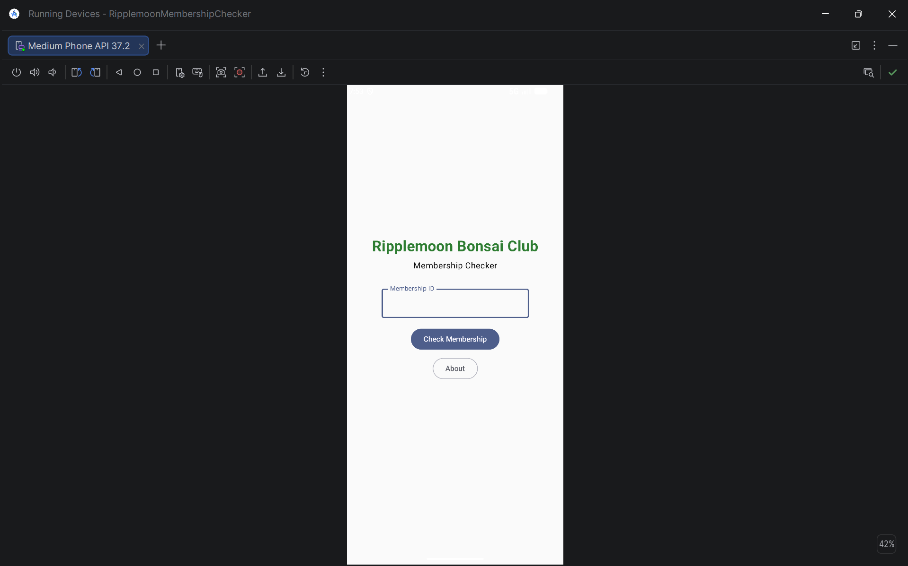
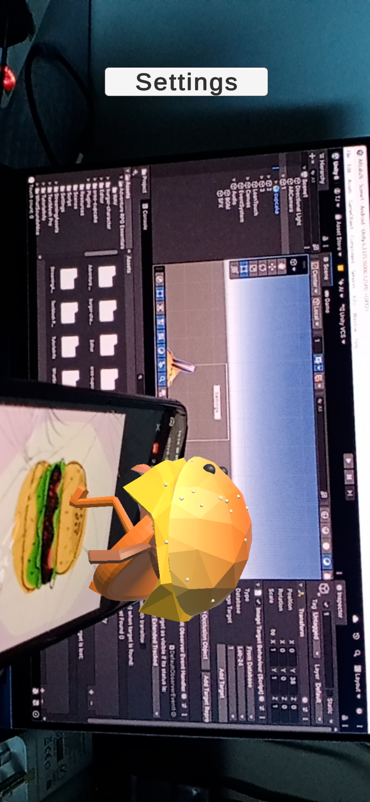

My Recent Projects

Ripple Moon Membership Checker
An Android application developed using Kotlin to manage and verify club memberships efficiently. The application allows users to check membership status through a simple and user-friendly interface.

ARLab26
An Augmented Reality (AR) application developed using Unity and Vuforia that overlays interactive 3D models onto real-world image targets through a mobile device.

Database Project
Designed and implemented a relational database system using SQL, including normalization, entity-relationship modeling, and query development for efficient data management.